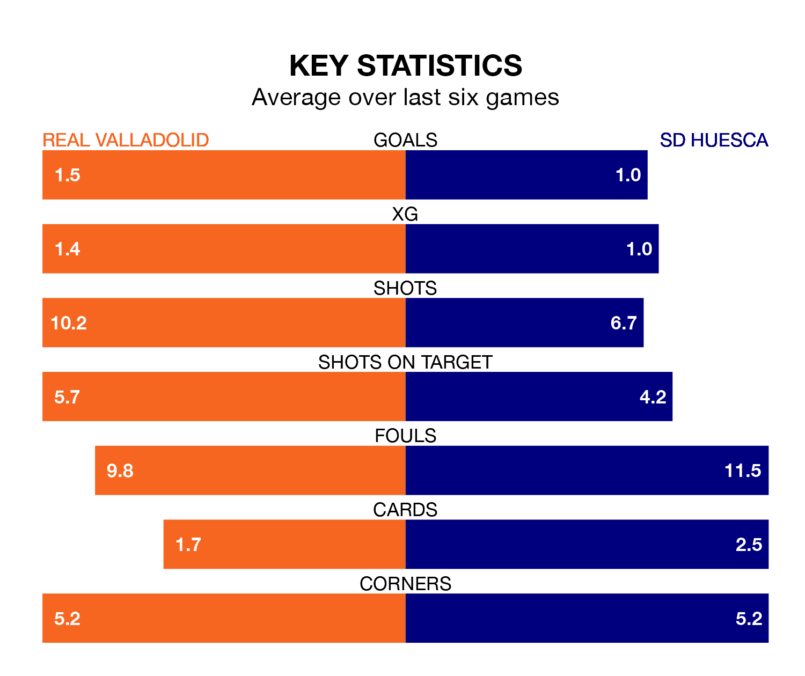

Two of the Segunda División's meanest defences go head-to-head at the Estadio Municipal José Zorrilla on Sunday, when SD Huesca visit Real Valladolid.
Only one side – Leganés – has conceded fewer goals than Huesca to date: the away side have let in just 27 goals in 36 games.
Valladolid have conceded 31 goals in 36 games, giving them the third tightest back line so far this season.
Key to Huesca's home form has been Álvaro Fernández, who has allowed 0.69 goals past him per 90 minutes, compared to 0.64 for Jordi Masip in the opposite net.
Valladolid are third in the table after 36 games, of which they have won 18 and drawn seven, earning 61 points.
Huesca are 11 places behind the hosts in 14th, with nine wins and 15 draws putting them on 42 points.
In the last 10 years, Valladolid and Huesca have played each other on 14 occasions. Valladolid won five of them, Huesca seven, and they drew twice.
On average, Valladolid scored 1.2 goals and Huesca 1.4 in those matches.
Their last meeting was on November 24, when Valladolid won 1-0 away.
Valladolid are in good form in the Segunda División, with four wins and a draw from their last six games.
With a win and three draws over that period, the away side's form is much worse – they have taken six points from 18, compared to Valladolid's 13.
Valladolid's last match was on April 20, a 3-0 win against SD Amorebieta, with Sergio Escudero (two) and Marcos André getting the goals for Valladolid.
Huesca lost 2-1 against Real Zaragoza last time out, also on April 20, with Miguel Loureiro Ameijeda on the scoresheet.
Updated: 07:59 (UTC), 26/04/24